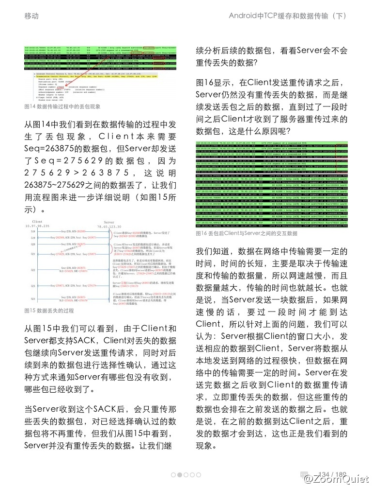

@程序员杂志 差点又躺着中枪。//@ZoomQuiet: KAO! 俺一直是双指扩大尝试的,,,看来MAC 中毒太深,,, //@laiyonghao：点图可以看大图的。@ZoomQuiet:程序员杂志201302:Android中TCP缓存和数据传输（下）！什么样的眼力才能在没有放大功能的电子版程序员中看懂关键细节？！ 
//@难得优雅: 我除了发号施令，别的都不会，我去当老板行么 //@子柳: 同理，也听说过“我编程能力不行，想做产品经理”@赝晓乙停用:刚才公司前台来了一个哥，硬闯要应聘营销策划，无奈我出去了。简历上写在阿里做过中供直销随后创业。问为什么要做营销策划，答认为自己管理能力不够所以要做营销策划。我就没忍了，这不是做直销陌生拜访，浪费别人时间的时候，自己脑子要清楚一点才好吧。
以前的同事, 俄罗斯人Philip, 目前在JetBrain公司做技术传道士，想在高校中推广软件开发工具，免liscense的。这种策略，还是微软和Sun时期的套路啊。@qyjohn_ @沈卓立TouchChina @alexxanda @心炯明-Michael
华为做OpenStack好久了，是国内这领域技术积累最强的公司，只是没炒作而已。你这还是官方帐号，别把常识当新闻。 //@中国开源云联盟:又一个OpenStack拥护者！@华为云:【华为存储率先支持OpenStack】OpenStack是当前最为活跃的为公共及私有云的建设与管理提供软件的开源项目。华为积极推动OpenStack的发展，旗下OceanStor T系列统一存储、Dorado2100 G2和Dorado 5100高性能固态存储均已成功支持OpenStack。OpenStack在4月发布的最新版本中将包含华为存储驱动。[hold住]
这是中文技术讲师进军国际技术圈一个好机会，就在家门口。可以当练兵。@甲骨文Java社区:#JavaOne#时隔三年再次来到中国。大会将于7月22–25日在上海世博中心举行，包括主题演讲、专题讲座和上机实践。内容涵盖现代Java SE应用；JavaFX客户端应用；下一代移动和嵌入式Java 应用；Java EE企业方案；云端业务应用等。目前征稿正在进行，欢迎通过以下链接提交稿件： 网页链接
在couchsurfing.org很早就注册了帐号，但最近才用信用卡缴纳11.75美元通过了验证，这个数字介绍说是给中国用户定制的最低额，多交也是可以的。在申请北京沙发的列表中，随机选了一个发出了邀请。不出意外的话，下周我家就会出现一个陌生的外国人。
姣姣上学期因常游泳得过中耳炎，医生说和耳屎(文雅的说法是“耵聍”)多有关。今天明俊带姣姣去医院掏了耳朵，30元，比成都宽窄巷子里的掏耳朵服务贵5块。我特关心掏出了多大的耳屎，姣姣没看，明俊没看清楚。糟糕的消息是有只耳朵没法清，耵聍要先软化才能掏，之后还得再去趟医院。
姣姣阅读和我谈了个条件，她自己读多少页，晚上我给她读双倍的页数。通常她会读15页。今晚有本书快读完了，姣姣念念有词，计算路径如下：53-26=27, 27/(2+1)=9。然后她宣布：“我再读9页，你给我读18页，这本书就读完了”。